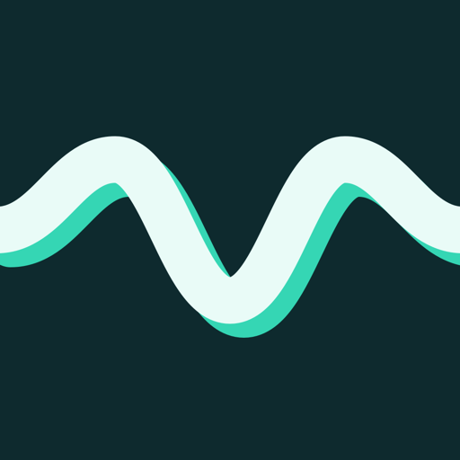

Illixion Apps
Install Ixion's iPhone and iPad apps with AltStore or SideStore. What each app does is on illixion.com.
Add to AltStore Add to SideStore
Or paste this address into the app's Sources tab:
https://apps.illixion.com/source.json
In this source
-

How it works
- Install AltStore or SideStore. Both read the same source.
- Add the source with the buttons above. They open the app on an iPhone or iPad.
- Tap Free on the app you want.
The apps are re-signed on your device with your own Apple ID. A free Apple ID allows three active sideloaded apps, each refreshed every seven days: AltStore does that through AltServer on a computer on your network, SideStore on the device. This page is static, with no accounts and no analytics.